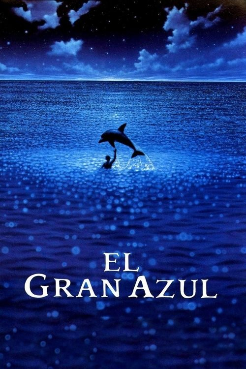

El gran azul (1988)

Plataforma: Disney+
Puntuación IMDb: 7.3/10
Duración: 2h 33m
Género: Drama deportivo
Sinopsis Rápida
Dos amigos, unidos por una pasión ilimitada por las profundidades del océano, se enfrentan en una batalla épica por la supremacía en el buceo libre, donde el límite entre la vida y la muerte se desvanece en el azul profundo.
Sinopsis Detallada
{{SINOPSIS_EXTENDIDA}}
¿Por qué tenés que verla?
- Una historia conmovedora sobre la pasión, la amistad y la superación personal.
- Las impresionantes imágenes submarinas, filmadas con una belleza y realismo excepcionales.
- Un clásico del cine que ha inspirado a generaciones de buceadores y amantes del mar.
- La exploración del espíritu humano y su búsqueda de la libertad.
Idea Extra
Comparativa entre la realidad del buceo libre y la representación en la película. Entrevista con un buceador profesional.